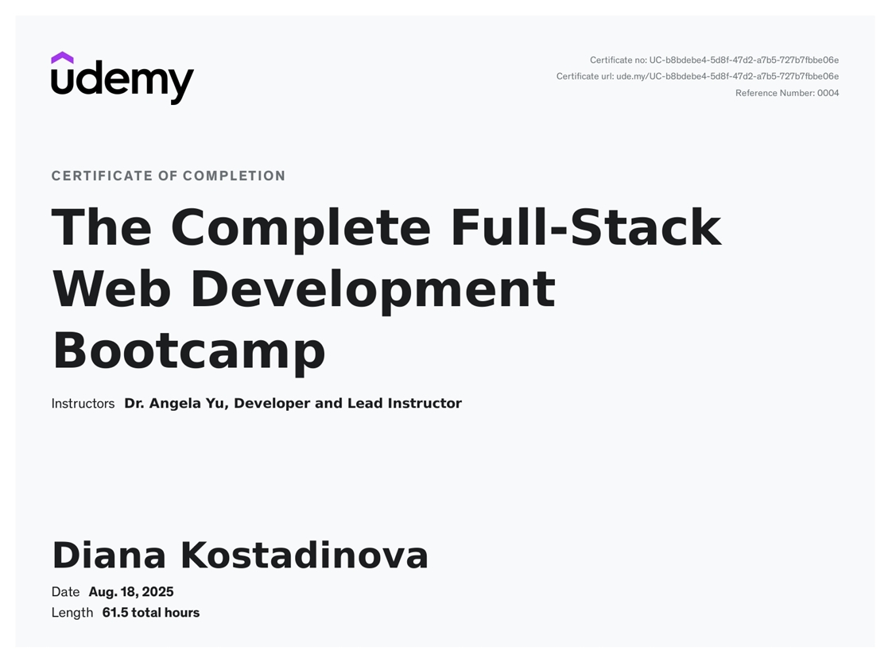
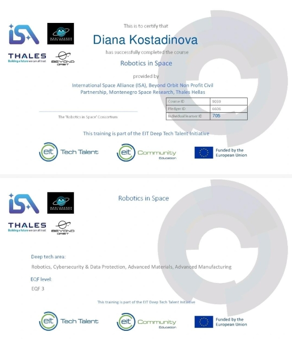

> ABOUT_ME
Computer Science Student @ FINKI, UKIM
Currently focused on building AI and machine learning applications and exploring how intelligent systems can be used in practical, real-world scenarios.
I enjoy taking ideas from concept to implementation — turning problems into working solutions.
I’ve built web applications, mobile apps, and ML-powered systems, experimenting with different technologies and approaches. I’m especially interested in how AI can enhance user experiences, automate tasks, and solve meaningful problems.
Constantly learning new tools, frameworks, and technologies, and always eager to expand my skill set and take on new challenges.
I’ve built web applications, mobile apps, and ML-powered systems, experimenting with different technologies and approaches. I’m especially interested in how AI can enhance user experiences, automate tasks, and solve meaningful problems.
Constantly learning new tools, frameworks, and technologies, and always eager to expand my skill set and take on new challenges.
Competitive Speed Cuber (WCA)
Ranked 1st nationally and 2nd internationally in Blindfolded Rubik’s Cube solving (3x3 BLD), becoming the
first female competitor in Macedonia to reach this level. Former Macedonian national champion in this
category.
Over time I’ve learned 400+ algorithms across different events.
My WCA profile →
Over time I’ve learned 400+ algorithms across different events.
My WCA profile →
Math & Informatics Competitions
Participated in numerous mathematics competitions, consistently earning high results and demonstrating
strong analytical and problem-solving abilities, subsequently sharing my expertise by tutoring and guiding
future competitors to excel in mathematics competitions.
> SKILLS
Core Computer Science
Object-Oriented Programming (OOP)
Data Structures & Algorithms
Structured Programming Principles
Database Systems & Data Modeling
Software Architecture Fundamentals
Data Structures & Algorithms
Structured Programming Principles
Database Systems & Data Modeling
Software Architecture Fundamentals
AI & Machine Learning
ML Model Development & Evaluation
Computer Vision Systems (YOLO, detection pipelines)
Few-shot Learning & Embedding Models
Dataset Cleaning, Annotation & Augmentation
LLM Integration & AI-powered Applications
Computer Vision Systems (YOLO, detection pipelines)
Few-shot Learning & Embedding Models
Dataset Cleaning, Annotation & Augmentation
LLM Integration & AI-powered Applications
Programming Languages
Python (AI, backend, data)
JavaScript (web & interactive apps)
C++ (algorithms, performance)
Java (OOP & application development)
JavaScript (web & interactive apps)
C++ (algorithms, performance)
Java (OOP & application development)
Frameworks & Backend Development
React & React Native
FastAPI
Angular
Firebase & Supabase
REST APIs & Service Integration
FastAPI
Angular
Firebase & Supabase
REST APIs & Service Integration
Tools & Technologies
Git & GitHub
AWS
Roboflow
Hugging Face Models
OpenAI API
PyTorch & TensorFlow
AWS
Roboflow
Hugging Face Models
OpenAI API
PyTorch & TensorFlow
> PROJECTS
Discover Macedonia is an AI-powered tourism web application designed to help visitors explore
locations, history, and cultural sites across Macedonia in a more interactive way.
The goal was to create a smart travel assistant that combines real-world information
with conversational AI to guide users like a digital tour companion.
Built with React and Firebase, the platform integrates multiple APIs to fetch location data, images, and contextual information. AI capabilities are powered through Hugging Face models, LLM-based assistants, and LLaMA/OpenAI API integrations to provide intelligent responses, recommendations, and explanations about places.
The project focuses on delivering an engaging, AI-enhanced user experience while strengthening front-end architecture, state management, and real-time data handling.
Built with React and Firebase, the platform integrates multiple APIs to fetch location data, images, and contextual information. AI capabilities are powered through Hugging Face models, LLM-based assistants, and LLaMA/OpenAI API integrations to provide intelligent responses, recommendations, and explanations about places.
The project focuses on delivering an engaging, AI-enhanced user experience while strengthening front-end architecture, state management, and real-time data handling.
React
Firebase
Hugging Face
LLaMA / LLMs
OpenAI API
REST APIs
AI Agents

A tourism-focused mobile application built with React Native that helps improve the visitor experience in Macedonia.
The app allows tourists to simply point their camera at a monument or landmark to instantly recognize it and
learn interesting information about its history and cultural significance.
The goal is to make exploring new places more interactive and educational, especially in regions where tourists may not have prior knowledge about local landmarks.
The system uses Python, FastAPI, Roboflow, and YOLOv8 for computer vision and real-time object detection. I managed large image datasets through cleaning, annotation, and optimization for model training, combining backend AI processing with a smooth mobile interface to deliver accurate landmark recognition in real time.
The goal is to make exploring new places more interactive and educational, especially in regions where tourists may not have prior knowledge about local landmarks.
The system uses Python, FastAPI, Roboflow, and YOLOv8 for computer vision and real-time object detection. I managed large image datasets through cleaning, annotation, and optimization for model training, combining backend AI processing with a smooth mobile interface to deliver accurate landmark recognition in real time.
React Native
Python
FastAPI
YOLOv8
Roboflow
Computer Vision
Designed a hybrid metric-classification model using PyTorch
for landmark recognition in environments with extremely limited data availability.
A major challenge was that there are very few large, structured datasets for Macedonian landmarks. This creates a barrier for building educational tools, tourism applications, and cultural heritage systems, since traditional deep learning models require thousands of images per class.
To address this, the project focuses on few-shot learning — developing a system that can learn to recognize monuments using only ~30 images per class. The model combines metric learning to build strong visual embeddings with a classification branch, along with aggressive data augmentation to improve generalization despite the limited dataset.
The framework achieved 75% classification accuracy across five Macedonian landmarks, demonstrating that hybrid few-shot approaches can make AI viable for regions where large datasets do not exist. This opens the door for practical use in tourism apps, educational platforms, and cultural preservation systems.
A major challenge was that there are very few large, structured datasets for Macedonian landmarks. This creates a barrier for building educational tools, tourism applications, and cultural heritage systems, since traditional deep learning models require thousands of images per class.
To address this, the project focuses on few-shot learning — developing a system that can learn to recognize monuments using only ~30 images per class. The model combines metric learning to build strong visual embeddings with a classification branch, along with aggressive data augmentation to improve generalization despite the limited dataset.
The framework achieved 75% classification accuracy across five Macedonian landmarks, demonstrating that hybrid few-shot approaches can make AI viable for regions where large datasets do not exist. This opens the door for practical use in tourism apps, educational platforms, and cultural preservation systems.
Python
PyTorch
Metric Learning
Few-Shot Learning
Computer Vision
Data Augmentation
Embedding Models
Model Evaluation
> CERTIFICATES
The Complete Full-Stack Web Development Bootcamp (Udemy)

Built full-stack web applications from concept to deployment.
Gained hands-on experience in front-end and back-end development, including
responsive UI design, API integration, and database systems.
Worked with React, Node.js, Express, SQL/NoSQL databases, deployment workflows, and version control using Git & GitHub. Strengthened skills in web architecture, state management, and server-side programming.
Worked with React, Node.js, Express, SQL/NoSQL databases, deployment workflows, and version control using Git & GitHub. Strengthened skills in web architecture, state management, and server-side programming.
Robotics in Space (International Space Alliance)

Hands-on experience with robotics systems and autonomous mechanisms related to space exploration.
Learned spacecraft design principles, subsystem architecture, and mission planning.
Worked with 3D printing for rapid prototyping of space components and explored cybersecurity
for protecting spacecraft communication and onboard systems.
Developed interdisciplinary skills combining mechanical design, software programming, and space mission engineering.
Developed interdisciplinary skills combining mechanical design, software programming, and space mission engineering.